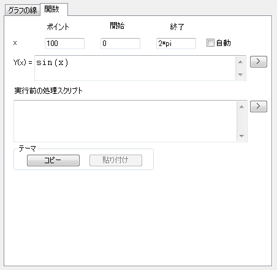
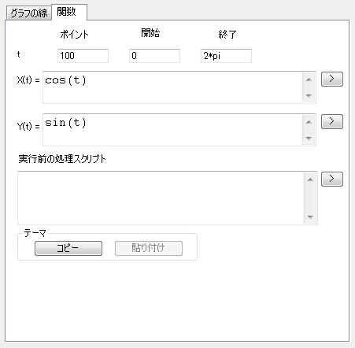

|  |  |
| 2D関数グラフ | 2Dパラメトリック関数グラフ |
内容 |
関数グラフに表示されるデ－タポイントの数を、この『点密度(全点数)』のコンボボックスに指定します。
このチェックボックスにチェックを付けると、Originが自動的にX範囲を決定します。
このチェックボックスのチェックを外します。すると、X範囲の開始と終了を指定するからとまでのテキストボックスが現れます。
このチェックボックスにチェックを付けると、グラフウィンドウに関数グラフが表示されます。
このボタンをクリックすると、フライアウトメニューから数学関数を選択でき、Fnテキストボックスにそれを追加できます。これらの関数についての詳細は、組込LabTalk関数をご覧下さい。
「元に戻す」ボタンを押すと、『Fn=』テキストボックスの内容を元に戻します。つまり、行なった編集操作の1つ前の状態に戻ります。
ここに曲線の数式を入力します。
一般的な数学および統計分布関数が、関数挿入フライアウトメニューから利用できます。さらに、Originが認識できる演算子を使って、テキストボックスに関数を直接入力することもできます。乗算には、乗算の演算子(*)を使う必要があります(省略できません)。また、関数挿入フライアウトメニューから利用できなくても、Originの組み込み関数や自分で定義した関数を呼ぶことができます。